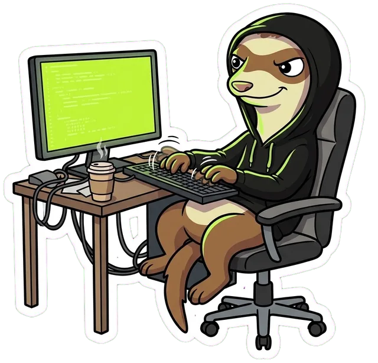
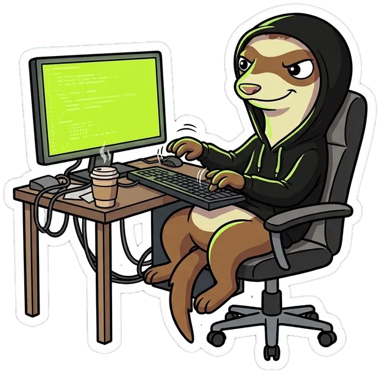

Видео перестаёт тормозить, Discord открывается. Один клик, без ВПН и без настроек. Бесплатно.
TenBoost работает на компьютере с Windows. Откройте эту страницу на ПК — или включите YouTube и Discord на телефоне через TENVPN.
TENVPN: 3 дня бесплатно

Для всего остального — ВПН нашей команды. Телефон, ноутбук, телевизор. От 7 ₽ в сутки, первые 3 дня бесплатно.
Трафик не уходит на чужие серверы, как у ВПН: TenBoost меняет только то, как компьютер начинает соединение.
Не нужны почта, телефон и регистрация. Программа не отправляет нам никаких данных.
«Параметры» → «Приложения» → TenBoost → «Удалить». Программа уберёт свою службу и файлы.
Контрольная сумма SHA-256 установщика — сверьте её после скачивания.
53ec9c50b199d8f37d1daf4a6d174235d9f69add28ddacab8f6d85e02ca9c6d2